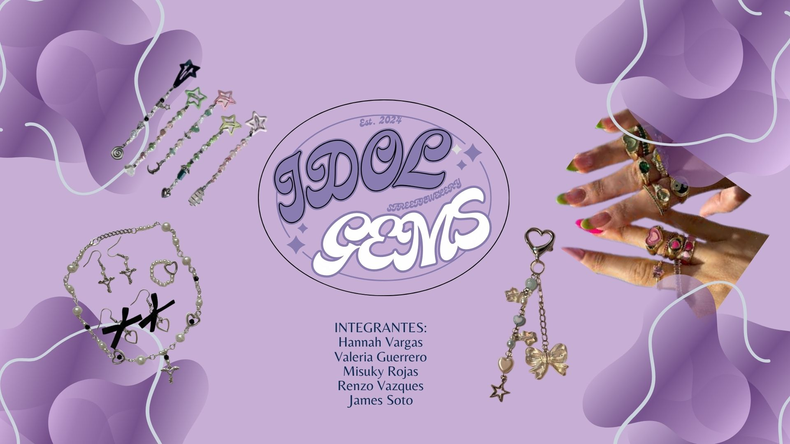
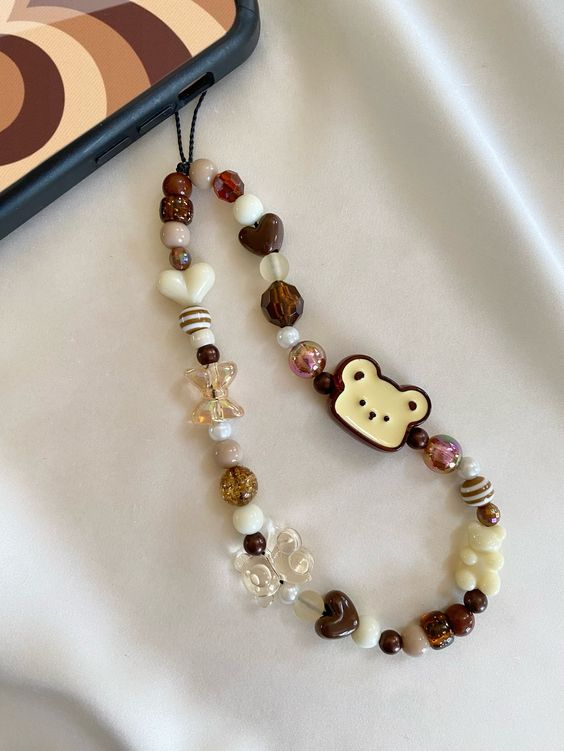
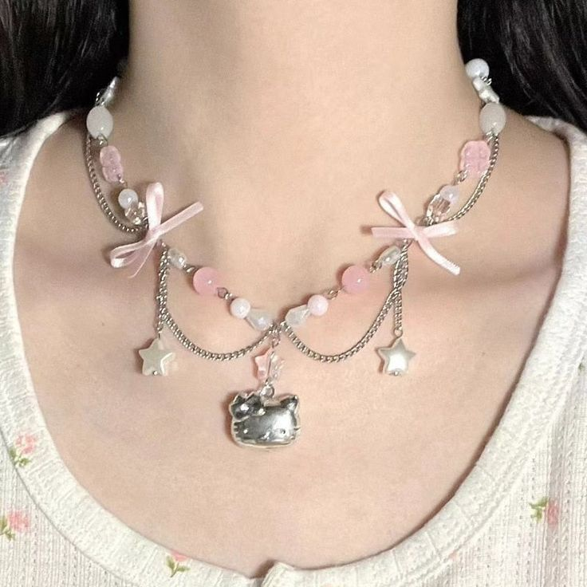

Somos una empresa dedicada a la creación de joyería artesanal hecha a mano con amor y dedicación. Creemos en la exclusividad y personalización de cada pieza para que se ajuste a tu estilo único. Productos basados en los gustos actuales adolescentes y sus intereses.
En nuestro taller de joyería artesanal, creamos piezas únicas pensadas especialmente para adolescentes que buscan destacar con su estilo personal. Cada accesorio es hecho a mano con materiales de alta calidad y un diseño moderno, accesible y lleno de personalidad.
Sabemos que los detalles hacen la diferencia, por eso nuestras pulseras, collares y accesorios para celulares están inspirados en las últimas tendencias juveniles, combinando lo artesanal con lo actual.
Con precios accesibles, buscamos que la moda no sea un lujo, sino una forma de expresión al alcance de todos.Sus creadores son los mencionados en la imagen.
Nuestros productos
Accesorios para celulares
Pulseras personalizadas

Collares
Separadores de libros

Síguenos en redes sociales